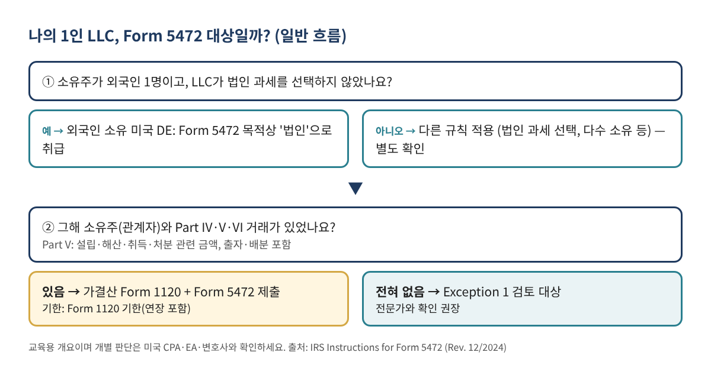
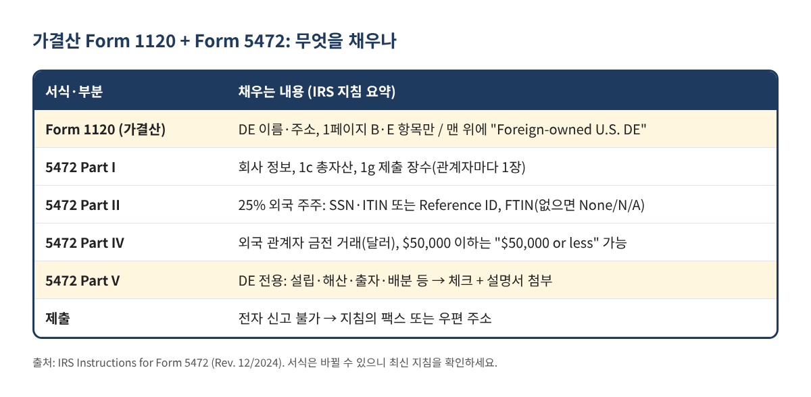
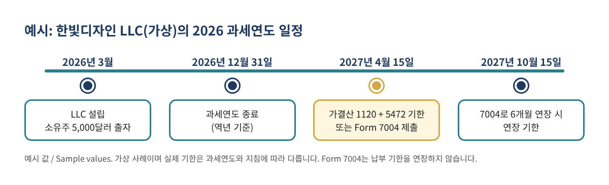

미국에 1인 LLC를 세운 한국 거주자가 놓치기 쉬운 신고 중 하나가 Form 5472입니다. 회사에 매출이 없어도, 미국 소득세를 낼 것이 없어도, 설립 과정에서 오간 돈 때문에 신고 의무가 생길 수 있습니다. 그리고 이 신고를 기한 안에 하지 않으면 IRS 지침이 정한 벌금은 한 건에 25,000달러부터 시작합니다. 이 글은 IRS 공식 지침을 바탕으로 누가, 무엇을, 언제, 어디로 내야 하는지를 단계별로 정리합니다.
이 글은 일반적인 교육용 정보이며 세무·법률·재무 자문이 아닙니다. 본인 상황은 반드시 전문가와 확인하시기 바랍니다.
이런 분께 필요합니다
· 한국에 살면서 미국 LLC를 혼자(1인) 소유하고 있는 분
· LLC가 법인 과세를 선택하지 않아 '무시되는 단체(disregarded entity)'로 분류된 경우
· 설립 후 아직 매출이 없거나 적어서 "신고할 것이 없다"고 생각하고 계신 분
· 이런 회사를 돕는 한인 가족·지인·실무 담당자
Form 5472의 정식 이름은 "25% 외국인 소유 미국 법인 또는 미국에서 사업하는 외국 법인의 정보 신고서"입니다. 원래는 법인이 외국·국내 관계자와 거래한 내역을 IRS에 알리는 정보 신고서입니다.
IRS는 외국인 1명이 전부 소유한 미국 내 무시되는 단체(1인 LLC 등)를 이 신고 목적에 한해 법인으로 취급합니다. Form 5472 지침은 이 규정이 2017년 1월 1일 이후 시작하고 2017년 12월 13일 이후 끝나는 과세연도부터 적용된다고 설명합니다. 즉 소득세 목적으로는 소유주에게 흡수되는 1인 LLC라도, 정보 신고 목적으로는 '보고 법인'이 될 수 있습니다.
IRS 1인 LLC 안내 페이지에 따르면 1인 LLC는 Form 8832로 법인 과세를 선택하지 않는 한 기본적으로 무시되는 단체로 분류됩니다. 이 글은 그 기본 분류를 전제로 합니다. 법인 과세를 선택한 경우에는 정식 Form 1120 신고 등 다른 규칙이 적용되므로 별도로 확인해야 합니다.
| 용어 | 뜻 (IRS 지침 기준 요약) |
|---|---|
| Foreign-owned U.S. DE | 외국인 1인이 전부 소유한 미국 내 무시되는 단체 |
| 가결산(pro forma) Form 1120 | 세액 계산 없이 Form 5472를 붙여 내기 위한 형식상의 1120 |
| 보고 대상 거래 | Part IV·V·VI에 해당하는 외국·국내 관계자와의 거래 |
| Part V | DE 전용 항목: 설립·해산·취득·처분 관련 금액, 출자·배분 포함 |
| Reference ID | 미국 납세번호가 없는 소유주용 식별번호(영숫자 50자 이내) |
Form 5472 지침에는 신고 면제 사유(Exception)가 몇 가지 있지만, 외국인 소유 DE에는 대부분 적용되지 않습니다. 지침은 Exception 2, 3, 6이 외국인 소유 DE에는 해당하지 않는다고 밝힙니다. Exception 1(보고 대상 거래가 없음)은 Part IV·VI 거래뿐 아니라 Part V 거래도 없을 때만 적용됩니다.
Part V에는 회사의 설립·해산·취득·처분과 관련해 주고받은 금액, 그리고 출자(contribution)와 배분(distribution)이 포함됩니다. 그래서 소유주가 설립비나 초기 운영비를 회사에 넣었다면, 매출이 없었더라도 일반적으로 보고 대상 거래가 있는 것으로 봅니다.

| 상황 (예시 값 / Sample values) | Part V 거래 해당 가능성 |
|---|---|
| 소유주가 설립 비용으로 회사 계좌에 송금 | 출자로서 해당될 수 있음 |
| 회사가 소유주에게 돈을 돌려줌 | 배분으로서 해당될 수 있음 |
| 회사 해산·지분 매각 관련 금액 | 해산·처분으로서 해당될 수 있음 |
| 설립 후 어떤 돈도 오가지 않음 | Exception 1 검토 대상 (전문가 확인 필요) |
개별 거래가 어느 Part에 해당하는지는 사실관계에 따라 달라집니다. 판단이 어려우면 미국 CPA·EA에게 확인하는 것이 안전합니다.
외국인 소유 DE는 Form 5472만 따로 내는 것이 아니라, 가결산(pro forma) Form 1120에 Form 5472를 첨부해서 냅니다. 지침에 따르면 Form 1120에서 채울 항목은 DE의 이름과 주소, 1페이지의 B·E 항목뿐이고, Form 1120 맨 위에 "Foreign-owned U.S. DE"라고 적어야 합니다.

Form 5472는 Form 1120의 기한(연장 포함)까지 냅니다. Form 1120 지침상 기한은 일반적으로 과세연도 종료 후 4번째 달 15일이며, 역년 기준이면 4월 15일입니다. 기한이 토·일요일이나 법정 공휴일이면 다음 영업일까지 낼 수 있습니다.
연장이 필요하면 원래 기한까지 Form 7004를 냅니다. Form 7004 지침상 Form 1120의 자동 연장은 일반적으로 6개월이며, Form 7004는 세금 납부 기한을 연장하지 않는다고 명시합니다. 또한 Form 5472 지침에 따르면 외국인 소유 DE는 Form 7004 Part I 1줄에 Form 1120 코드를 적고 맨 위에 "Foreign-owned U.S. DE"라고 씁니다.
| 항목 | IRS 지침 내용 |
|---|---|
| 전자 신고 | 외국인 소유 DE는 Form 5472 전자 신고 불가 |
| 팩스 | 855-887-7737 (300 DPI 이상) |
| 우편 | Internal Revenue Service, 1973 Rulon White Blvd, M/S 6112, Attn: PIN Unit, Ogden, UT 84201 |
| 주의 | Form 1120 지침의 일반 우편 주소를 쓰지 말 것. Form 7004도 같은 팩스·주소로 |
팩스 번호와 주소는 바뀔 수 있으므로, 제출 직전에 최신 Form 5472 지침을 다시 확인하시기 바랍니다.
Form 5472 지침에 따르면 기한 내에 정해진 방식으로 Form 5472를 내지 않거나, 필요한 기록을 보관하지 않으면 25,000달러의 벌금이 부과됩니다. 내용이 상당 부분 빠진 신고서도 미제출로 봅니다.
IRS 통지 후 90일이 지나도 해결되지 않으면, 그 이후 30일(또는 그 일부)마다 관계자별로 25,000달러가 추가됩니다. 지침에는 이 벌금의 상한이 적혀 있지 않습니다. 형사 처벌 조항(섹션 7203, 7206, 7207)이 적용될 수 있다는 언급도 있습니다.
| 상황 (예시 값 / Sample values) | 지침상 벌금 구조 |
|---|---|
| 기한 내 미제출 또는 기록 미보관 | 25,000달러 |
| 내용이 상당 부분 누락된 신고 | 미제출과 동일하게 취급 |
| IRS 통지 후 90일 경과 후에도 미해결 | 관계자별, 30일마다 25,000달러 추가 |
다음은 이해를 돕기 위한 가상의 사례입니다(예시 값 / Sample values). 서울에 사는 김민서 씨(가상 인물)가 2026년 3월 미국에 1인 LLC '한빛디자인 LLC'를 설립했습니다. 법인 과세 선택은 하지 않았고, 2026년에는 매출이 없었습니다.
이 경우 매출은 없지만 소유주의 출자라는 Part V 거래가 있으므로, 일반적으로 Exception 1이 적용되지 않습니다. 소유주에게 미국 신고 연도가 없다면 과세연도는 역년이고, 2026년분 가결산 Form 1120 + Form 5472의 기한은 2027년 4월 15일입니다. 연장이 필요하면 그날까지 Form 7004를 내서 6개월 연장을 받을 수 있습니다.

한국 측 의무도 확인하세요
한국 거주자가 미국 회사나 미국 계좌를 보유하면, 한국에서도 외국환거래 규정상 해외직접투자 신고, 해외금융계좌 신고, 국세청에 대한 해외현지법인 관련 자료 제출 등의 의무가 생길 수 있습니다. 대상·기준·기한은 개인 상황과 연도에 따라 다르므로 한국 세무사나 거래 은행에 확인하시기 바랍니다.
FinCEN.gov의 현재 안내(2026년 8월 11일 게시)에 따르면, FinCEN은 2025년 3월 임시 규칙의 면제를 확정하는 최종 규칙을 내놓았고 이 규칙은 2026년 8월 14일 발효되었습니다. 이 안내는 미국에서 설립된 회사는 BOI 보고 의무에서 면제되며, 보고 회사는 외국법에 따라 설립되어 미국 주에 사업 등록을 한 단체로 한정된다고 설명합니다. 이는 FinCEN 보고에 관한 것이며, IRS의 Form 5472 의무와는 별개입니다. 은행의 고객 확인(KYC) 절차도 그대로 적용됩니다.
외국인 소유 DE의 Form 1120은 세금을 계산하는 신고가 아니라 Form 5472를 붙여 내기 위한 형식상의 서식입니다. 보고 대상 거래가 있으면 일반적으로 가결산 Form 1120 + Form 5472를 내야 합니다.
지침상 미국 납세번호가 없으면 Reference ID(영숫자, 공백·특수문자 없이 50자 이내)를 적습니다. 외국인 소유 DE는 외국 납세자 번호(FTIN)가 있으면 적고, 없으면 "None" 또는 "N/A"라고 씁니다. Reference ID는 해마다 같은 번호를 써야 합니다.
지침은 기한 내 미제출에 25,000달러 벌금을 정하고 있습니다. 늦었더라도 가능한 한 빨리 정확한 신고를 준비하고, 벌금 감면 가능성 등은 미국 CPA·EA·세무 변호사와 상의하시기 바랍니다.
아닙니다. Form 5472는 정보 신고서이며 세금을 계산하는 신고가 아닙니다. 회사의 활동 내용에 따라 소유주 본인에게 별도의 미국 신고 의무가 있는지는 미국 CPA·EA에게 확인하시기 바랍니다.
계좌 유무보다 소유주와 회사 사이에 돈이 오갔는지가 기준입니다. 소유주가 설립비를 대신 낸 경우 등도 확인이 필요합니다. 계좌 개설은 비거주자 미국 법인 은행 계좌 개설 글을 참고하세요.
LLC 설립의 전체 흐름은 한국인 비거주자를 위한 미국 LLC 설립 가이드에서 볼 수 있습니다.
이 글은 일반적인 교육 목적의 정보이며, 세무·법률·재무 자문이 아닙니다. 세법, 서식, 수수료, 제출 방법과 기관 정책은 수시로 바뀔 수 있으며, 개인의 상황에 따라 적용 결과가 달라집니다. 실제 신고 전에는 IRS 등 공식 출처를 직접 확인하고, 미국 측은 CPA·EA·변호사, 한국 측은 세무사와 상담하시기 바랍니다.